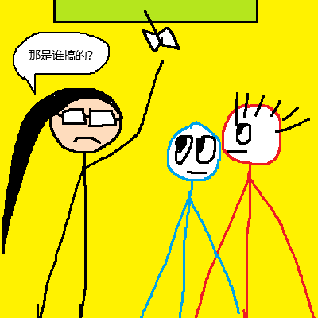

第157篇 日记
2026年01月21日 晴 Wed.
日常生活：“飞来横祸”
最近，许梓浩和李钧宸“研制”了一种飞箭：就是给一个中性笔笔芯加上“机翼”，然后扔出去，再捡回来。“研制”出来之后，他们很快在学校走廊里玩这种“飞箭”。周宏宇、吴雨哲也“生产”了一个这样的飞箭。
今天中午，我们在走廊上玩。李钧宸把飞箭扔了出去，结果击中了挂在天花板上的标语栏。这时席老师经过了这里，她看到扎在标语栏上的飞箭，便问：“这是谁搞的？赶紧用扫把把那笔芯弄下来。”许梓浩说是李钧宸，然后他便拿扫把把那笔芯弄了下来。
